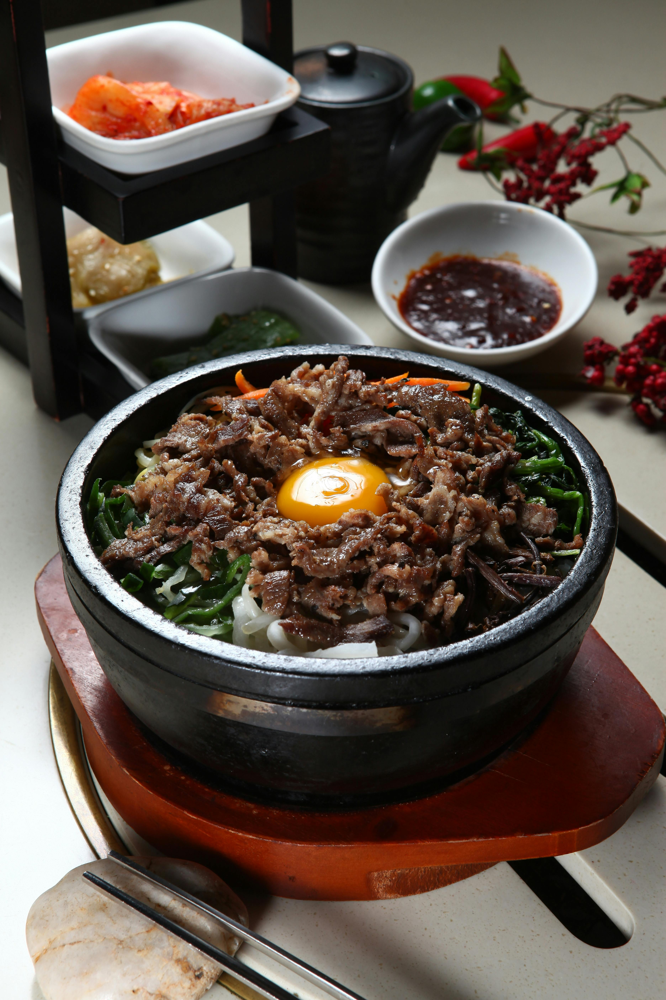

Bibimbap
Bibimbap is a delicious Korean dish consisting of mixed rice topped with various vegetables, meat, a fried egg, and spicy sauce. Here's a step-by-step guide on how to make bibimbap:
Ingredients
- Cooked white rice
- Assorted vegetables (such as carrots, spinach, zucchini, mushrooms, bean sprouts)
- Eggs
- Sesame oil
- Soy sauce
- Vegetable oil
- Gochujang (Korean red chili paste)
- Garlic
- Sugar
- Sesame seeds
- Salt
- Thinly sliced beef or tofu (optional)
Step by Step Instructions:
- Cook white rice according to package instructions. Keep it warm
- Prepare veggies
- Thinly slice carrots & mushrooms.
- Blanch bean sprouts in boiling water for 1-2 minutes, then drain and rinse under cold water. Squeeze out excess water.
- Blanch spinach in boiling water for 30 seconds to 1 minute, then drain and rinse under cold water. Squeeze out excess water.
You can stir-fry each vegetable separately or together in a pan with a bit of vegetable oil and a pinch of salt until just tender.
- If using beef, thinly slice it against the grain and marinate it in a mixture of soy sauce, sugar, minced garlic, sesame oil, and black pepper for about 15-30 minutes. Then stir-fry until cooked through.
- Heat a bit of oil in a pan over medium heat. Crack eggs into the pan and fry them until the whites are set but the yolks are still runny. Season with salt and pepper.
- In a small bowl, mix together gochujang (Korean red chili paste), sesame oil, sugar, and a bit of water to reach your desired consistency.
- Assemble Bibimbap
- Divide the warm rice into bowls.
- Arrange the cooked vegetables and meat (if using) on top of the rice in sections.
- Place a fried egg on top of each bowl.
- Drizzle bibimbap sauce over the top & sprinkle toasted sesame seeds.
- Serve immediately, with extra sauce on the side if desired.
To eat, mix all the ingredients together thoroughly so that the flavors combine. Enjoy your homemade bibimbap.